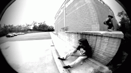

The Pop Shove-it is simply a 180° rotation of the
board, whilst the rider maintains his direction. Much like the Spin
Ollie, the Shuvit can be performed as a Frontside or
Backside.

What's The Difference?
Frontside
Pushing your back foot forward as you rotate the board.
Backside
Pulling your back foot backwards as you rotate the board.
3 Shove is a trick where the board rotates
360° when you shuvit.